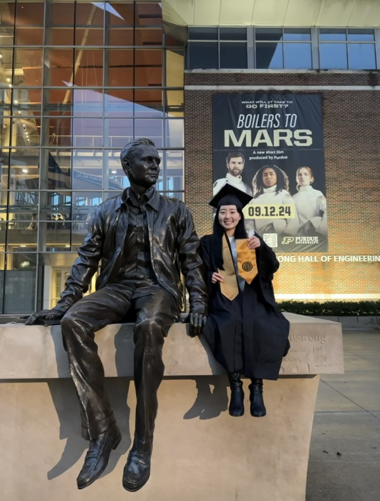

About Yoon Kim

I am passionate about leveraging data science, artificial intelligence, and human-computer interaction (HCI) to create inclusive and accessible technologies. My research interests lie at the intersection of machine learning, assistive technology, and ethical AI, with a strong focus on improving accessibility for underserved communities.
I hold a BS in Applied Statistics from Purdue University (Dec 2024), where I also earned an Applications in Data Science Undergraduate Certificate. I am currently applying my statistical and data analysis expertise as a Manufacturing Quality Engineer at Qcells in Cartersville, GA, since Mar 2025.
My ultimate career goal is to conduct cutting-edge research at the doctoral level, focusing on the intersection of data science, AI, and HCI to drive innovation in accessible technology and healthcare solutions.
My technical expertise includes statistical modeling, machine learning, and AI applications. I am proficient in Python, R, SQL and visualization tools like Tableau and PowerBI. For a comprehensive list of my technical skills and achievements, see my Skills & Achievements page.
Outside work, I enjoy traveling and watching MLB games, offering creative outlets and broadening perspectives.
More of Me